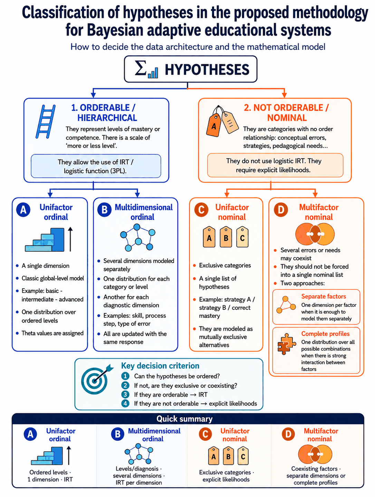

Technical guide to implement adaptive evaluation with Bayesian inference and Shannon entropy
Version 2.6
See also: Detailed mathematical explanation with numerical examples →
Download Operational Specification for AI — short file ready to attach or paste into any AI model
This document serves as a guide for creating adaptive educational applications, activities or quizzes based on Bayesian inference and Shannon entropy.
The objective is not to create a linear test or a rigid sequence of questions, but rather a system capable of adapting the student's experience based on their answers. Each response is interpreted as evidence that progressively modifies a probability distribution on different educational hypotheses.
These hypotheses may refer to:
The system produces a pedagogical interpretation, not just a score.
The system uses the student's responses as evidence to update hypotheses about their learning situation.
Each response modifies the estimate gradually. A single answer does not determine the outcome by itself.
A correct answer increases the likelihood of certain hypotheses and an incorrect answer increases the likelihood of others, always according to the likelihoods associated with each question.
The system avoids definitive conclusions when uncertainty remains high.
The system does not directly observe the student's knowledge. It only observes evaluable signals —responses, times, choices, aids used, or other interactions— and interprets them as partial evidence about different educational hypotheses. It is worth being precise about the current scope: the likelihood machinery of this version models correct/incorrect, partial credit (\(s\)), and the chosen option. Response times and the use of aids are observed and may inform the result, but they have no defined likelihood and remain as extensions outside the current scope —the exception is the effect of hints offered within an item, which is addressed in §15—.
That is why an isolated response does not prove a hypothesis true or false. The response modifies the plausibility of each hypothesis according to how well that evidence fits it. The resulting diagnosis is a belief revised by the available evidence, not a definitive label on the student.
This reading is important pedagogically: the resource should make visible what the student knows, what is in doubt, and with what degree of confidence. When several hypotheses remain plausible, the system should preserve that uncertainty and, if appropriate, choose a new question that helps distinguish between them.
In this sense, a good question is not simply the hardest one nor the one the student is most likely to answer correctly, but the one that provides the best evidence to decide between interpretations that are still open. Adaptive selection by expected information gain translates this idea into an operative rule.
The practical consequence is that the final result should be explained as an inference based on evidence: which hypothesis is best supported, what uncertainty remains, which responses have been most relevant, and what pedagogical intervention follows from it.
The student's state is represented as a probability distribution over several hypotheses.
For example, a simple system might use three hypotheses:
But the system does not necessarily assume three levels. It can adapt to more or fewer levels, depending on the educational context.
Non-strictly hierarchical hypotheses can also be used, for example:
If there is no prior information about the student, the system can begin with balanced probabilities. If reliable prior information exists, a justified initial distribution can be used instead. Such an even spread is neutral for level hypotheses, but not for error factors that can coexist: there it amounts to asserting that each error affects half the class, so an informative prior should be used instead (§5.1).
The student's state does not have to be represented by a single distribution. When it is useful to know not only how much has been mastered, but also which specific skills or steps are failing, the system can maintain several probability distributions in parallel: one per category or level and another for each diagnostic dimension (a skill, a process step, or a type of error).
Each distribution should be updated with the evidence that belongs to it: the overall result may modify the belief about level, and each scored part of the response modifies the belief about its own dimension. If the same global response depends on several skills, that single correct or incorrect outcome should not be used to update all independent dimensions, because it would duplicate evidence and misattribute the cause of the error. In this way, the level estimate indicates what should be practised, while the diagnosis by dimension indicates what should be explained or reinforced. Each dimension may have its own probability of success by chance, so percentages from different dimensions are not directly comparable. In ordinal dimensions, the shared reference may be the underlying latent level; in nominal error factors there is no common \(\theta\), only marginal probabilities and states such as "present", "absent" or "undetermined".
The decision between independent dimensions and full profiles is not transferred to the teacher as a technical decision. The AI makes it from the pedagogical description: if each error appears and is interpreted separately, it uses independent factors; if the expected response changes because of error combinations, if one error masks another, or if the intervention depends on the combination, it uses full profiles. When \(2^k\) profiles is impractical, it groups related errors or diagnoses in phases.

Each type has a published example that illustrates it:
The system updates the probability distribution using Bayesian inference.
For each hypothesis, the probability of observing the student's response if that hypothesis were true is estimated.
That probability is the likelihood.
If the student answers a question correctly, the system uses the probability of success under each hypothesis. If the answer is incorrect, it uses the probability of failure under each hypothesis.
The result of each update is a new probability distribution on the considered hypotheses.
The process repeats after each response.
Although the document keeps a language understandable for teachers, it includes the essential formulas so that the system can be implemented coherently. Their formal development, derivations and numerical examples are in the Mathematical foundations, which are the canonical reference; here they appear in their minimal form.
If there are \(n\) hypotheses and no reliable prior information exists, a uniform distribution can be used:
Here \(H_i\) represents one possible hypothesis about the student's state.
The uniform prior is appropriate for level hypotheses, but not for binary error factors: a uniform prior over the combinations of \(k\) factors (or over "present/absent" for each) amounts to claiming that each error has a 50 % prior probability of being present. That is not neutral —it is a strong claim about its prevalence— and it biases the first few questions toward false positives (errors the student does not have shown as probable). Since conceptual errors are usually a minority, it is advisable to start from a moderate informative prior (for example, \(P(\text{error})\approx 0.2\)–\(0.3\)); the resource applies this by default automatically and the teacher may adjust their group's prevalence if they wish, but is not required to.
This prior admits an automatic adjustment from the teacher's own language, without asking them for any figure. If, while describing the resource, the teacher qualifies how frequent an error is ("it happens to a lot of them", "it's an isolated case"), the system translates that description into an initial value: \(P(\text{error})=0.40\) when described as frequent ("many", "most", "always"), the default \(0.2\)–\(0.3\) when described as occasional or left unsaid, and \(0.10\)–\(0.15\) when described as rare ("few", "isolated cases"). The reason is the false negative symmetric to the one that motivates the informative prior: if the teacher already knows an error is widespread in their group, starting from \(0.25\) spends questions rediscovering it.
The adjustment is deliberately gentle and bounded by three rules. A prior \(\geq 0.5\) is never used (it would assert that the error is more likely than its absence, the very bias being corrected), nor \(< 0.10\) (three discriminating failures would be needed to confirm a real error, which a small bank may never supply). The minimum sample of evidence is never relaxed: starting from \(0.40\), a single discriminating failure (\(LR\approx 4\)) would already bring the marginal to \(0.727\) and cross the "present" threshold, so without that requirement the teacher's word alone would diagnose the student. And the initial prior is also the anchor of forgetting (§13.2): a factor declared frequent that runs out of recent evidence returns to \(0.40\), not to \(0.25\). Overall, the adjustment shifts the decision by one item —confirming an error takes two discriminating failures from the default prior, one from \(0.40\) and three from \(0.10\)— and nowhere in the permitted range can the prior alone declare an error "present".
After each answer, the probability of each hypothesis is updated by:
The denominator is calculated by adding over all the hypotheses:
Here \(R\) is the observed response, which may be correct, incorrect, or another automatically scorable result anticipated by the system. The full derivation is in Foundations §3.
For each question \(q\) and each hypothesis \(H_i\), the system estimates:
If the student answers incorrectly, the system uses:
These probabilities are the likelihoods that fuel Bayesian updating.
In multiple choice questions, the minimum probability of being correct by chance depends on the number of options in each question:
Here \(c_q\) is the probability of answering question \(q\) correctly by chance, and \(m_q\) is the number of options in that question.
For example, a four-option question has:
This probability belongs to each question, not to the entire test.
The system can generate these likelihoods automatically. A recommended option is to use a logistic function adjusted for chance:
Where:
This formula does not replace Bayes. It only generates the likelihoods that Bayes needs.
The \(a\) parameter controls the slope of the logistic curve. A high value makes the function discriminate more between close hypotheses; a lower value produces smoother transitions. The usual values in psychometrics range between 0.5 and 2.5. For general purpose educational systems, values from 1.0 to 1.5 are reasonable starting points; in this methodology the default is to fix the effective discrimination \(a_{\text{ef}}=1.25\) and derive \(a\) from each item's guessing floor.
However, how much the curve separates between levels depends not on \(a\) alone but on the product \(a\,(1-c_q)\): the guessing floor «flattens» the upper part of the curve. This is why it is best to fix a target effective discrimination \(a_{\text{ef}}\) (1.25 by default, chosen so that the derived \(a\) never exceeds 2.5, not even for true/false, where \(c_q = 0.5\)) and compute \(a\) for each question as \(a = a_{\text{ef}} / (1 - c_q)\). This is not only for tests that mix formats: it should be applied always, because it equalizes the maximum slope of the curve and prevents the format from mechanically changing that slope. It does not mean that every format provides the same expected information: information-gain selection will still prefer the items that discriminate best in the current posterior state. The mathematical formulation (§4.4) details this relationship.
It is worth being precise about what this invariant equalizes: the maximum slope, not the maximum strength of the evidence from a failure. In the failure likelihood ratio, the guessing floor \(1-c_q\) cancels out and that ratio grows with the nominal discrimination \(a = a_{\text{ef}}/(1-c_q)\), not with \(a_{\text{ef}}\). That is why a failure on an easy true/false item (where \(a\) reaches 2.5) carries far more evidence than the same failure on an open question: with \(\Delta\theta = 2\), the failure likelihood ratio between adjacent levels is ≈ 12 for open, ≈ 28 for 4 options, and ≈ 148 for true/false. So that a single failure does not drive the posterior almost deterministically, the methodology applies a mastery ceiling in the ordinal case too (\(P(\text{success}) \le 0.90\text{–}0.95\), never 1), the same one the nominal case already imposes; besides bounding these jumps, it models slip, which the pure 3PL does not account for.
The uncertainty of the system is measured by:
Where \(p_i\) is the current probability of each hypothesis.
The maximum entropy, when all hypotheses are equally probable, is:
This value helps adjust the stopping threshold to the number of hypotheses considered. See Foundations §5.
To select the next question, the system can estimate the expected reduction in uncertainty:
Where \(P(A)\) is the total expected probability of success and \(P(F)\) is the total expected probability of failure, calculated using the law of total probability:
The posterior distributions for a correct and an incorrect response are calculated by applying Bayes (§5.2) before the actual answer is known, and from them the expected entropy of each scenario. When possible, the most useful question will be the one that produces the greatest expected reduction in entropy. The full development, with the formulation as mutual information, is in Foundations §6.
The formulas above assume that the response is binary: correct or incorrect. But many tasks are solved through steps or components and allow partial credit. In those cases, instead of classifying the response as simply correct or incorrect, it is summarised as a score \(s\) between 0 and 1. If only that aggregate score is available, the coherent likelihood is the geometric one: it weights the probability of a correct and an incorrect answer with exponents \(s\) and \(1-s\), so that the evidence favours the hypothesis whose predicted success probability is closest to \(s\). With \(s=1\) it is equivalent to a completely correct answer and with \(s=0\) to a completely incorrect one; an \(s=0.5\) is not neutral, it favours the intermediate hypotheses. Linear interpolation is not used, as it would always push towards an extreme hypothesis. When the concrete response components are known, it is preferable to multiply their likelihoods separately instead of reducing everything to a single score. The formula, its formal development and a numerical example are in Foundations §4.8.
Selecting the next activity must use the same likelihood as the update. This coherence rule has a counter-intuitive consequence worth stating, because the natural mistake is the opposite one. If the resource summarises the response into a score \(s\) and updates with the geometric likelihood, the information gain must still be computed over the two extremes (full success and full failure). Refining it —averaging over every score \(s\) the item can produce— degrades the diagnosis instead of improving it.
The reason is that the geometric likelihood drives every intermediate score toward the intermediate hypotheses: it is built that way. A medium-difficulty exercise produces intermediate scores for any student —the one who has mastered it slips on some step, the one who has not gets one right by chance— so it pushes the belief toward the middle level regardless of the true state. A selector averaging over the real scores sees that concentration, mistakes it for information, and picks precisely the exercises that do not discriminate. Measured on a real resource built with this method, diagnostic accuracy falls from 98.5 % to 95.9 % when averaging over the exact distribution of \(s\), and to 93.7 % when averaging over four discrete scenarios; the proportion of medium-difficulty exercises selected rises from 9 % to 27 %.
The fix belongs in the update. When the exercise is marked by known components (the steps, with their weight and their probability of being right by chance), there is no need to summarise it into a score: the component likelihoods are multiplied, which is what this protocol already prefers (§5.8). Selection and update then share a model, accuracy rises to 99.3 %, and a chronic under-confidence of the summary disappears: the belief assigned 0.75 probability to the true level while being right 98 % of the time, that is, it wasted evidence it already had. Figures, derivation and a check with dependent components in Foundations §6.6.
Likelihoods are the central element of the system.
For each question, the system estimates:
The teacher does not need to manually fill out a probability table. That task is done by the system.
The teacher provides understandable pedagogical information, such as:
For that reason, the quality of the result does not depend only on the algorithm, but also on how this initial information is structured. If the pedagogical classifications are poorly defined, if the difficulties are not reasonably calibrated, if the relevant conceptual errors are not well identified, or if the bank offers weak coverage of the important cases, the generated likelihoods may misrepresent reality and the subsequent adaptation may be biased or unreliable.
From this information, the program automatically generates the likelihoods. This can be done with a generative model, preferably a chance-adjusted logistic function, and the values can later be recalibrated with real data if enough responses are available.
The recommended workflow is therefore:
Teacher judgment guides the definition of levels, difficulties, objectives, and concepts, but does not require teachers to enter numerical probabilities.
The application does not depend on a fixed global likelihood table.
Each question can have its own parameters, especially:
This allows the system to work with questions of different types within the same test.
For example, a test may include two-option, four-option, five-option, matching, and numerical-response questions. Each one generates its own likelihoods.
Each question has an estimated difficulty.
Difficulty can be expressed qualitatively, for example as easy, medium, or difficult. It can also be expressed on a more flexible scale.
The system does not assume that there will always be three difficulties. It adapts to the number of categories defined by the teacher.
When the teacher defines difficulty qualitatively, the system converts it into numerical values by spreading them evenly over the central half of the level scale: with \(k\) categories, the easiest and hardest land at \(\pm\theta_{\max}/2\) (with \(\theta_{\max}=n-1\), where \(n\) is the number of levels) and the rest at equal intervals. The conversion therefore depends on the number of levels in addition to the number of categories: a table depending only on the number of categories would be inconsistent when there are few levels and many categories (with two levels, \(\theta=\pm 1\), it would assign difficulties up to \(\pm 2\), inverting the separation between scales). Examples: with 3 levels and 3 categories, \(b \in \{-1, 0, +1\}\); with 3 levels and 5 categories, \(b \in \{-1, -0.5, 0, +0.5, +1\}\); with 4 levels and 3 categories, \(b \in \{-1.5, 0, +1.5\}\). The exact formula is in Foundations §8.3.
Consequently, it is not enough simply to have many questions: the bank should be well distributed across the pedagogically relevant axes of the resource, especially difficulty, item type, and the content, skills, or errors the system is meant to discriminate. If an important area is underrepresented, the system may look adaptive while actually reasoning from a weak base.
The total number is not enough either. To prevent adaptive selection from becoming repetitive, the bank needs local redundancy: in each relevant area, there should be several alternative questions with similar difficulty and diagnostic function. If a category, level, or error type has only one useful item, the system will tend to repeat it even when the selection rule itself is correct.
The \(\theta_i\) values that represent the levels are fixed and depend only on the number of hypotheses (centred at zero, with spacing 2 and \(\theta_{\max}=n-1\)); the difficulties are placed within that scale, in the central half, and outliers are clamped to it. Thus the range of \(\theta\) is strictly greater than that of \(b_q\) —which prevents extreme questions from weakly confirming the extreme levels— and an atypical question does not stretch the scale or distort the likelihoods of the rest of the bank. The reason (the "factor of 2 rule") and the full derivation are in Foundations §8. That margin grows with \(n\): with \(n \geq 3\) the extreme items confirm comfortably, but with \(n = 2\) (mastered / not mastered) confirmation is weaker (probability ≈ 0.65–0.77 depending on the format), so it is advisable to compensate with more questions.
The system allows different numbers of hypotheses:
The entropy threshold and stopping criteria are adapted to the number of hypotheses considered. The same threshold is not used for all designs without justification.
If you want to stop when the most probable hypothesis exceeds a \(p_{\min}\) confidence level (for example, 0.80), the associated entropy threshold is obtained by assuming that the remaining probability is distributed evenly among the other \(n-1\) hypotheses (formula and derivation in Foundations §7). Some guide values with \(p_{\min}=0.80\):
| Hypothesis \(n\) | \(H_{\text{stop}}\) (bits) |
|---|---|
| 2 | 0.72 |
| 3 | 0.92 |
| 4 | 1.04 |
| 5 | 1.12 |
The above formula assumes that the remaining probability is distributed evenly among the other \(n-1\) hypotheses, which does not always happen in real distributions. For example, with three hypotheses, the distributions (0.80, 0.10, 0.10) and (0.80, 0.19, 0.01) have the same maximum hypothesis but different entropy. Therefore, the \(H_{\text{stop}}\) threshold is understood as a practical approximation, not as an exact equivalent. It is worth knowing that, when \(H_{\text{stop}}\) is derived from the same \(p_{\min}\), the maximum-probability condition already implies the entropy condition (if the most probable hypothesis reaches \(p_{\min}\), the entropy is below the threshold): checking both is harmless, but adds no requirement. The check that does add something different is requiring a minimum separation between the winning hypothesis and the runner-up, \(P(H_{\text{winner}}) - P(H_{\text{second}}) \geq \Delta_{\min}\). However, this separation only adds a requirement if \(\Delta_{\min} > 2p_{\min} - 1\): with \(p_{\min} = 0.80\), requiring \(\max_i P(H_i) \geq p_{\min}\) already forces a separation \(\geq 0.60\), so a \(\Delta_{\min}\) of 0.3–0.4 would also be redundant. Its real usefulness is as an alternative to a high \(p_{\min}\): with many hypotheses, a moderate maximum plus a separation of 0.3–0.4 is a more natural confidence criterion than requiring \(\max_i P(H_i) \geq 0.80\) (see the mathematical explanation, §7.4).
The hypotheses of the same distribution are mutually exclusive and cover the relevant alternatives for that decision. If multiple errors, gaps, or needs can coexist, it is a good idea to use separate distributions by concept, dimension, or category, rather than forcing them into a single list of hypotheses.
When the hypotheses are not hierarchical—alternative categories with no order relationship between them, such as different strategies, alternative causes of the same failure, or thematic areas with no hierarchy—the IRT logistic function may not be the most appropriate model, because it assumes a single scale of “more or less mastery”. In these cases it is better to define the likelihoods in another way: for example, by directly assigning a high probability of success to questions that diagnose the correct hypothesis and a lower probability to those that confuse it with other hypotheses. Bayesian updating remains identical; only the way the likelihoods are generated changes.
If several errors or needs can coexist, however, they should not be forced into a single list of nominal hypotheses. The appropriate approach is to use one dimension per factor or, if you need to capture their interactions, a distribution over full profiles (the possible combinations of those factors). In that setting the ideal evidence is not just “correct” or “incorrect”, but also which option the student chose: a distractor may be precisely the signal of a specific error.
To assign those probabilities without empirical data, an explicit criterion helps. For each question and each hypothesis, factor, or profile, estimate: "if the student had this error or this combination of errors, how often would they answer this question correctly and which distractor would they choose?". The value will be low when the question attacks precisely the concept the error distorts, and high when the error does not interfere. Bound each value between a guessing floor (no less than \(1/m\), with \(m\) options, when failure comes from random guessing) and a ceiling below 1 for mastery (around 0.90–0.95, leaving room for slips). There is a single justified exception to the floor: if the question is multiple-choice and one of the distractors is precisely the answer the error produces, the student is drawn toward that option and their probability of success falls below chance. There is no need to fine-tune the exact decimal: it is enough that, in discriminating questions, the correct profiles separate clearly from those that the error makes fail. The mathematical formulation (§10) details these variants and their validation.
Since the system works automatically, it uses automatically scorable question types.
Suitable formats include, among others:
Long open-ended questions are not included if the program cannot reliably correct them automatically.
Open questions can be useful in a general educational activity, but they are not part of the automatic adaptive engine if there is no reliable mechanism for correction or teaching intervention.
In multiple choice questions, the minimum probability of being correct by chance depends on the number of options in each question. This probability belongs to each item, not to the entire test.
Examples:
If within the same test there are questions with a different number of options, each question uses its own minimum probability of success by chance.
In multiple selection with several correct answers, the probability of success by chance may be different. The system handles this case specifically, especially if exact matching with the correct combination is required.
In numerical responses with tolerance or exact short responses, the probability of correctness by chance may be considered null or very low, depending on the design.
When an item is scored through several components with different numbers of options—for example, a task with several steps—and partial credit is used, the weighted average of the component chance levels represents the expected partial score by chance, not the probability of getting the complete item right. That value may feed the logistic function if the curve is interpreted as the expected score of the composite item. If the item is scored all-or-nothing, the probability of full success by chance is the product of the chance levels of the independent components.
Where appropriate, likelihoods can be generated using a chance-adjusted logistic function.
The general idea is that the probability of correctness increases when the student's hypothetical level exceeds the difficulty of the question, and decreases when the difficulty exceeds the student's hypothetical level.
If this model is used, two important conditions are respected: the probability of correctness is not less than the probability of correctness due to chance inherent to the question, nor does it exceed the mastery ceiling (\(\le 0.90\)–\(0.95\), never 1) described in §5.5, which models slips and prevents near-deterministic posterior jumps after a failure.
Therefore, a four-option question does not assign a probability of success less than 25%, because a student who answers at random has that probability of being correct.
The logistic function does not replace Bayes. It only serves to generate the likelihoods that Bayes needs.
The system allows this generation to be adjustable. For example, there may be a sensitivity or discrimination parameter that determines how much a question separates between some hypotheses and others.
From the current estimate, the program dynamically selects the next question, explanation or activity.
The selection aims at pedagogical usefulness and may serve to:
The system does not limit itself to raising the difficulty after a success and lowering it after a failure.
It takes into account response history, concepts already assessed, detected errors, content variety, relative question difficulty, question type, number of options in each question, probability of success by chance, and the confidence level of the current estimate.
When several questions have the same expected information gain, which often happens when they share the same difficulty parameters and number of options, the choice among them is not deterministic. A weighted random selection is recommended: calculate the gain for all candidates, gather those within a small margin of the maximum, and choose among them with probability inversely proportional to how often their category or concept has already appeared. This combines maximum informative usefulness with thematic diversity, without imposing rigid restrictions. Deterministic tie-breaking leads to systematically repetitive tests across different sessions.
In adaptive practice, reinforcement, or skill-training resources, selection does not always pursue the same objective. At first it is useful to diagnose; afterwards it is better to intervene where mastery is weakest.
A two-phase strategy is recommended:
This separation avoids excessive use of Shannon entropy. Entropy answers the question “where do I have the most uncertainty?”, but it does not always answer “what does the student need to practice the most?” In pure diagnostic evaluation, maximizing uncertainty reduction may be the main criterion. In adaptive practice and reinforcement, it is combined with a pedagogical utility function that gives priority to less mastered content.
Operationally, the reinforcement phase can use a utility score such as:
utility = α · Normalized_GI + (1 − α) · difficulty_adjustment
where difficulty_adjustment decreases when the question difficulty moves too far away from the student's estimated level. A reasonable initial value is α = 0.6 or 0.7, so as to preserve diagnostic value without turning reinforcement into a succession of overly difficult exercises.
For the weight α to mean anything, both terms must be on the same [0, 1] scale: Normalized_GI = IG(q) / IG_max among the current candidates, and difficulty_adjustment = max(0, 1 − |b_q − E[θ]| / 2), which equals 1 when the difficulty matches the estimated level (E[θ] = Σ p_i·θ_i) and 0 when it is a full level interval away.
The stopping criteria (section 17) assume that the goal is to diagnose and stop. In open practice or reinforcement resources, however, there may be no fixed endpoint: the session continues while the student practises, and the estimated state is understood as an evolving estimate, not as a closed diagnosis. In that mode, entropy and confidence indicate the degree of certainty rather than ending the session, and the two-phase selection strategy remains active throughout the practice.
With only a few attempts, a single answer can shift the estimate substantially. To avoid communicating unfounded mastery, it is advisable to require a minimum sample per category or dimension before showing high levels of mastery, and to present the estimate as provisional while the evidence remains scarce. This is a presentation decision: it does not change the Bayesian calculation, only how it is reflected in the interface.
In long practice sessions there is a further nuance: the student learns while practising, and pure Bayesian updating gives the same weight to old responses as to recent ones, so the estimate can stay anchored in a state the student has already moved past. For the estimate to track their current state, it is advisable to apply a gradual forgetting of old evidence (exponential forgetting): recent responses weigh more than old ones and the system effectively remembers the last 10–20 responses. In short-session diagnostic resources this forgetting is not applied. The mechanism, its recommended values, and the extension that models learning explicitly are in the mathematical explanation (§3.5).
What it is attenuated toward. It is worth being precise about which distribution forgetting is anchored to, because "prior" has two distinct senses here. In a sequential Bayesian update, the posterior obtained after one response acts as the immediate prior of the next response, and therefore changes at every step. Forgetting is not anchored to that one, but to the initial or reference prior \(\pi\): the one fixed when the resource is defined (§5.1), which stays constant throughout the session. Before incorporating a new response, the accumulated estimate is attenuated slightly toward that initial distribution; Bayes is then applied with the new evidence:
Anchoring forgetting to the immediate prior would make no sense: it would mean attenuating each distribution toward itself, that is, doing nothing at all.
That anchoring to the initial prior, rather than to the uniform, is what prevents any informative prior from degrading merely with the passage of the session. The most damaging case is that of error factors: with initial prior \(P(\text{error}) \approx 0.25\), a factor that goes some time without receiving evidence drifts toward 50% and reappears as "undetermined" or "probable" without the learner having done anything, reintroducing the false positive the informative prior avoids (§5.1). Anchored to the initial distribution, forgetting discards old evidence but distributions with no new evidence remain at it. Furthermore, with forgetting active, the minimum sample per category must be counted over a recent window, not over the whole session: evidence expires, but a cumulative counter does not. That expiring counter governs the mastery gates, not what is shown to the learner: if the interface displays how many exercises they have solved, that number is the real total; and a category left with no recent evidence has returned to its initial prior, so it should be presented as no recent data rather than as a weakness.
A calibration nuance when there are several parallel distributions: attenuating them all on each response means each one ages once per response but only receives evidence when the question belongs to it. A single \(\lambda\) for all of them penalises those updated less often: with six categories, the \(\lambda=0.95\) intended for a memory of twenty responses leaves each category a memory of little more than three of its own attempts, enough to erase the initial diagnosis. Hence the memory is set in attempts of that distribution and \(\lambda\) is derived from it for each one. The exact formulation is in the mathematical explanation (§3.5).
When a resource organizes learning into successive phases or stages — for example, a pathway that first works on one technique and then another — it is useful to distinguish between the student's overall estimate and a local estimate specific to each stage. Belief accumulated in previous stages should not by itself be enough to decide whether the student has passed the current stage: that decision is best made with the evidence generated within the stage itself.
To consider a stage passed, it is advisable to require, jointly, two kinds of condition.
1. Local confidence. The most probable local hypothesis exceeding a \(p_{\min}\) (for example, 0.80) and the local entropy falling below the corresponding \(H_{\text{stop}}\). As already explained in §9 and §17, when \(H_{\text{stop}}\) is derived from the same \(p_{\min}\), the confidence condition already implies the entropy one: checking both here is just as harmless as it is there, but adds no extra requirement.
2. Observed performance in the stage. This is the condition that does add something different: an explicit minimum of actual correct answers. Without it, a very confident Bayesian estimate — for instance, if the stage's questions are poorly calibrated — could pass the stage on few correct answers; it is worth requiring separately, not as a substitute for local confidence but as an additional check.
But not measured by the raw percentage correct. If the stage's items are selected by maximum information, every learner's success rate tends by design toward \((1+c)/2\) — around 50-62% depending on the format — so a fixed threshold such as "60% correct" may block learners who master the stage, and its effect depends on the item format. For the criterion to be informative it should be measured on evidence that is not selected by maximum information: requiring correct answers on one or two "exit" items of representative difficulty, chosen without an informative criterion, or checking that the observed rate does not fall well below the rate expected under the local-mastery hypothesis (the same person-fit statistic from Foundations §11.7 applied as a stage criterion).
Two operational nuances. First, the format of the exit items matters: avoid true/false, where a single item lets most non-masters through by chance (\(P(\text{correct} \mid \text{no mastery}) \approx 0.6\)), while requiring 2 out of 2 open-ended items blocks ≈ 1 in 4 learners who do master the stage; the filter complements local confidence, it does not decide on its own. Second, with the few items of a stage the normal approximation of the person-fit statistic is weak: compare observed versus expected correct answers with a margin of ~1 standard deviation (or an exact binomial test) and treat it as an indicative signal, not a hard block.
The resource itself applies all of this automatically, from the difficulties it already knows: it does not require the teacher to understand the methodology or to configure anything, unless they choose to.
If the student repeats a stage, it is advisable to reset the local estimate for that stage rather than carrying over the previous state, unless there is an explicit pedagogical reason not to. Finishing a stage does not necessarily mean having passed it either: the system may propose going through it again or reinforcing it before moving on.
The learning pathway for solving for x, mentioned in §3.1, applies this pattern: it keeps a local estimate per stage in addition to the overall one, and decides stage promotion using the evidence generated within it.
When possible, the system selects the question that most reduces the expected uncertainty.
To do so, it estimates, before presenting the question:
With several parallel distributions. If the state is represented by several distributions (error factors or diagnostic dimensions), gain is first computed per distribution and then grouped into pedagogical blocks — for example, overall level, errors, categories or stages. Within a block, the gains of its distributions may be summed, because in the factorised representation joint entropy is the sum of entropies.
How blocks are combined. Each block's gain should be normalised among the available candidates, with automatic weights inferred from the purpose. By default: if the purpose centres on one block, weight 0.7 for that block and 0.3 shared among the rest; if mixed, equal weights per block, not by raw number of dimensions. These weights are not requested from the teacher; the AI chooses them from the expressed educational intent.
When a block counts as decided. When it reaches its confidence criterion: the level block, on exceeding \(p_{\min}\) with the minimum number of questions; the errors block, when all its factors leave the undetermined zone with their minimum sample. Its weight is then shared proportionally among the blocks that remain uncertain.
Two cautions. First: the combined utility is not in bits, because normalisation rescales each block's best candidate to 1 even when its gains are minuscule; the minimum-gain stopping criterion must therefore be evaluated on the total raw gain, never on the normalised utility. Second: a nearly exhausted block can be over-represented just before becoming decided; if that becomes visible, weight the raw gains (mean per dimension) or normalise by the block's remaining entropy.
The best question does not have to be the one that matches the most probable level. It can be a question that helps distinguish between two still plausible hypotheses.
For example, if the system hesitates between intermediate and advanced levels, a difficult question may be more useful than a medium one. If it hesitates between basic and intermediate, a medium or easy question may be more informative, depending on the likelihoods.
Maximising uncertainty reduction has a side effect worth knowing: the most informative questions tend to be those whose probability of success is around 50%, so the student will fail roughly half of what they answer during the diagnosis. This is optimal from an informational point of view, but it can have a motivational cost with young learners or learners who struggle. A reasonable —and optional— pedagogical decision is to open with an accessible question or interleave one with a high chance of success, accepting a small loss of efficiency in exchange for sustaining the student's confidence.
When the selection of questions is made based on the maximum expected information gain, recovery remains largely integrated in the Bayesian mechanism itself: if the student initially fails but then correctly answers more difficult questions, the posterior is automatically moved and the system selects more demanding questions. Explicit retrieval logic is usually not necessary, but full retrieval is not guaranteed if the questions are poorly calibrated, if few are available at any level, or if the student responds at random.
Explicit recovery mechanisms are only necessary when question selection is based on simple difficulty rules (up after a correct answer, down after an incorrect one), because in that case the system may get stuck at the wrong level. If selection by information gain is used, the risk of blocking is greatly reduced, because the system reevaluates the posterior after each response. Still, practical blocking can occur if the question bank is limited, if the likelihoods are poorly calibrated, or if the test is stopped too early.
Hints within an item. Offering a hint before the student answers changes that item's probability of success: a correct answer after a hint is not the same evidence of mastery as a correct answer without help. To avoid overestimating the level, that correct answer should not be recorded as a full success, but as partial credit with a score \(s < 1\), the smaller the more decisive the hint was (if the hint practically gives the answer, the evidence of mastery is almost nil). This reuses the geometric partial-credit likelihood (Foundations §4.8) instead of treating the assisted success as if it were spontaneous.
Reusing items after their correction. The same reasoning applies to an item repeated after the learner has seen its correction or explanation (including the immediate retry): a subsequent correct answer may reflect only memory of the feedback, not mastery. That success must not be recorded as full evidence. In practice mode it is always treated as partial credit: the correct answer with a reduced \(s\) — the more explicit the explanation shown, the lower — and the wrong answer with full weight; it is never excluded from the update, because with a finite bank exclusion freezes the estimate once the least-mastered category runs out of fresh items and locks the selection into a loop of ineffective reviews. Only in diagnosis mode (a deliberate immediate retry) may the retry be excluded from the update and count only as practice. The best local redundancy is not repeating the same item but having parameterised variants of the same type (same concept, difficulty, and format with different data): each variant counts as a new item and carries no feedback contamination.
How a generated bank is built and verified. A bank of variants is only more reliable than a hand-written one if it is built so that its correctness can be checked, because nobody will read most of its items. Two conditions achieve this. First: the template must derive the correct answer by applying the very rule the item teaches to the drawn parameters, instead of carrying it transcribed; then there is a single rule to review per template and the correctness of all its variants follows from it. Second: every variant must pass an automatic verification before delivery — that the answer marked as correct reproduces the value of the expression in the prompt, evaluated at test values away from \(0\) and \(1\) (where many false identities hold by coincidence); that the options are distinct and no incorrect one has the same value as the correct one, since the question would then lack a unique answer; and that all content renders without error. The metadata that feeds the model (difficulty, number of options, error factor, distractor position) stays fixed per template: all its variants are then equivalent under the model and the bank's Monte Carlo validation still applies. The limit of that check is worth remembering: it validates the mathematics, not the wording. A prompt can be true and still have given the answer away, and only reading a sample of variants from each template catches that.
What is guaranteed in any design:
A reasonable degree of confidence is estimated through Shannon entropy applied to the probability distribution over the hypotheses.
When probabilities are widely spread, entropy is high and the system remains uncertain. When one hypothesis concentrates most of the probability, entropy is low and the system is more confident.
Entropy serves to:
The stopping threshold is adjusted to the number of hypotheses considered and the desired degree of precision.
The process ends when there is reasonable confidence about the student's learning state or when a practical limit is reached.
Possible stopping criteria are:
In multifactorial models, stopping is evaluated per factor: a factor is decided when its marginal probability leaves the undetermined zone (for example, present if \(P(\text{error}) \geq 0.7\), absent if \(\leq 0.3\)) and has its minimum sample of evidence. The session closes when all factors are decided, when no item provides an appreciable gain on the undetermined ones, or when the practical maximum is reached; undecided factors are reported as undetermined, not forced.
If the final entropy is still high, the system clearly indicates this. In that case, the result is presented as a provisional estimate, not as a firm conclusion.
The final result is presented as a pedagogical interpretation.
Where appropriate, it includes:
It is not limited to displaying a score or a label.
When two hypotheses end with close probabilities, it is advisable to show the full posterior distribution (for example, with a bar chart) instead of a single winning label.
In error-factor diagnosis with an informative prior (\(P(\text{error}) \approx 0.2\)–\(0.3\)), absence already starts at 0.7–0.8 with no evidence at all: a factor must not be declared absent merely because its marginal exceeds the confidence threshold. The result must also require that factor's minimum sample of evidence and distinguish "confirmed absent" (with evidence) from "insufficient evidence" (the prior's default value).
If the resource combines an ordinal level estimate with error factors, both are parallel marginal estimates fed by the same evidence, not independent findings: the final result must be presented coherently. If the estimated level is high and some error remains "present", it is presented as a nuance of the level ("masters X, although error Y persists"), not as juxtaposed contradictory conclusions. Marginal confidences are not combined into a joint probability either; the limits of this factorised representation and its safeguards are detailed in Foundations §10.6.
The purpose of the system is to help make educational decisions.
The concept of an adaptive educational resource is understood broadly. An adaptive test is only one particular case. The same logic can be applied to explanations, practice activities, simulators, learning pathways, hint systems, reinforcement activities, extension activities, or resource recommendation tools. What matters is that the resource makes pedagogical decisions on the basis of the evidence gathered during the interaction with the student.
The concrete implementation adapts to the educational context indicated by the teacher.
Before designing the system, it is advisable to collect information about:
The system adapts its decisions to that context.
In short, an implementation faithful to this protocol follows these rules:
This protocol does not replace teacher judgment.
The system can help guide decisions, but its results are best interpreted with caution, especially when:
The main value of the approach is in making uncertainty explicit and in adapting the activity to the available evidence.
When the result is to be used for decisions, it must be accompanied by reliability checks that require no empirical data: a pattern-fit index for each student (it detects responses inconsistent with difficulty, which would make the diagnosis unreliable even when confidence is high) and a validation of the design by simulation (it estimates, before applying the test, to what extent the bank separates the levels). Both are described in the mathematical foundations (§11.7–§11.8) and measure reliability under the model, not empirical validity. If the AI generates the resource in an environment with execution, it must run that simulation; if it works in a chat without execution, it must prepare a validation utility for the teacher/author view and mark the result as "validation pending execution", without claiming that the bank has already been checked.
That validation under the model does not replace the content review, which is the one thing the teacher can validate better than the system and requires no knowledge of the methodology. When delivering the resource, the AI must generate a short checklist in teacher language: whether the modelled errors are real errors of their students, whether any question is too easy or too hard for the grade, whether the correct answers and explanations are correct, whether any important case of the topic is missing, and whether the language suits the age. If the teacher points out a problem in their own words, the AI adjusts the bank or the model; they are not asked to review parameters or probabilities.
In extended learning resources such as tutorials, adaptive practice, reinforcement, or extension activities, the student's state may change during the session itself. In such cases, the posterior is not interpreted only as the diagnosis of a fixed state, but as a dynamic estimate that can combine recent evidence, support used, observed progress, and changes in performance. The exponential forgetting mechanism described in the mathematical foundations (§3.5) makes this idea concrete by giving recent responses more weight than old ones.
The mathematical development of the model (Bayesian inference, Shannon entropy, item response theory) and its full bibliography are in the detailed mathematical explanation.
As pedagogical grounding specific to this protocol:
How to cite this document (APA 7): de Haro, J. J. (2026). Protocol for Bayesian adaptive educational systems (Version 2.6). https://jjdeharo.github.io/recursos-adaptativos/documentacion_en.html
The formal development of the mechanisms described in this protocol —Bayesian inference, IRT model, Shannon entropy and adaptive selection— is provided in the companion document Mathematical Foundations, which includes formulas, proofs and a complete numerical example.